Pour l'équipe de REC 242 : se connecter, retrouver ses écrans et effectuer ses tâches courantes, rôle par rôle.
Ce qui est identique pour tous les rôles.
Mot de passe oublié ? Cliquez sur Mot de passe oublié ? : vous recevez un lien par e-mail, valable 1 heure. Il n'y a pas de deuxième étape de confirmation.
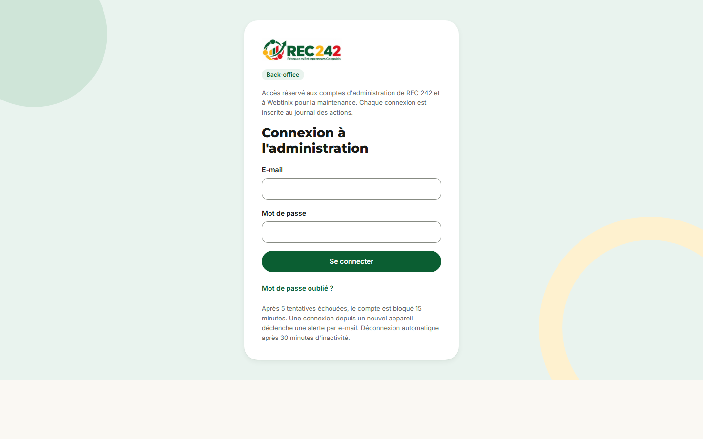
Votre mot de passe est personnel : 12 caractères au minimum. Ne le partagez jamais, même avec un collègue ou avec Webtinix. Chaque connexion, réussie ou ratée, est inscrite au journal des actions.
Le menu est rangé en cinq groupes. Vous ne voyez que les écrans que votre rôle permet d'ouvrir : un écran absent du menu n'est pas pour vous.
| Groupe | Écrans |
|---|---|
| Pilotage | Tableau de bord |
| Adhésions | Candidatures, Membres et entreprises, Cotisations |
| Activité | Événements, Commissions, Opportunités, Demandes des membres, Messages |
| Contenus | Actualités, Pages, menus, médias, Documents |
| Administration | Paramètres, Utilisateurs et rôles, Journal |
Les pastilles rouges à côté d'un écran indiquent le nombre d'éléments qui attendent une action (par exemple des candidatures à traiter). Elles se mettent à jour toutes les minutes environ.
C'est la première page après la connexion. Elle répond à la question « qu'est-ce qui attend une action aujourd'hui ? ».
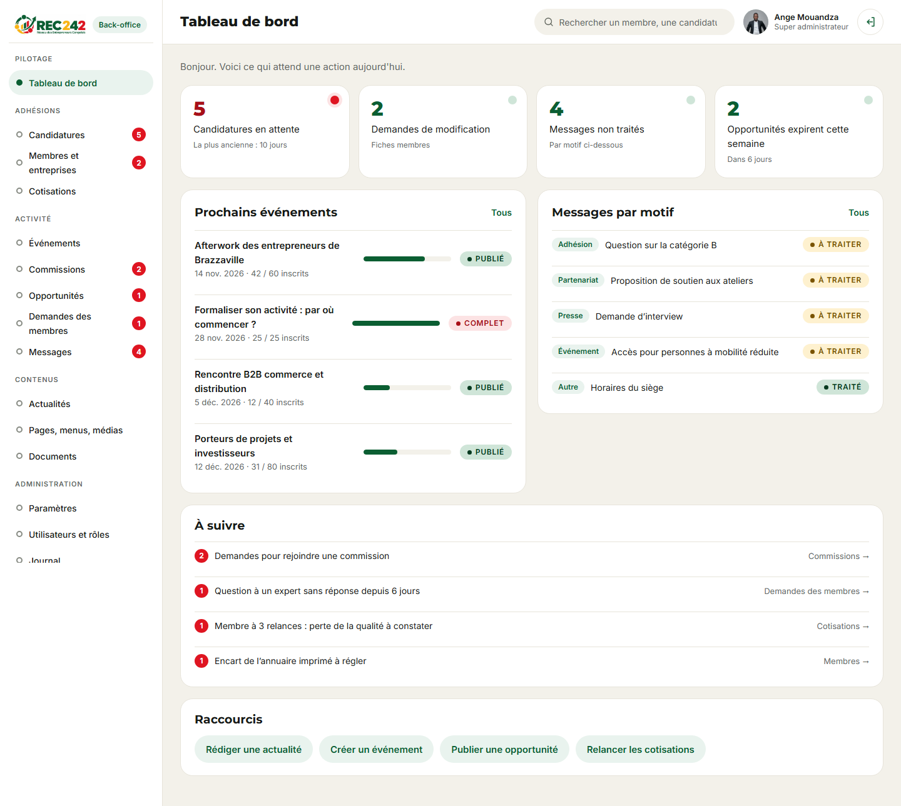
Chaque bloc ne montre que ce que votre rôle permet de voir. Un bloc qui n'apparaît pas n'est pas une erreur : vous n'y avez pas accès.
La barre en haut de l'écran cherche un membre (nom, numéro d'adhérent ou e-mail) ou une candidature (nom, prénom, entreprise ou e-mail).
Le rôle qui gère aussi les personnes et leurs droits. Il est confié à très peu de personnes (la maintenance Webtinix et la direction de REC 242).
| Domaine | Droit | Précision |
|---|---|---|
| Pages et menus | Tous droits | Publie et supprime. |
| Actualités | Tous droits | |
| Événements et inscrits | Tous droits | |
| Candidatures et fiches membres | Tous droits | |
| Exports de données personnelles | Tous droits | |
| Opportunités | Tous droits | |
| Cotisations et paiements | Tous droits | |
| Utilisateurs et rôles | Tous droits | Seul rôle qui invite, change les rôles, désactive et débloque. |
| Paramètres et référencement | Tous droits | |
| Journal des actions | Tous droits | Lecture et export. Aucune entrée ne se modifie ni ne se supprime. |
| Commissions, gouvernance et experts, demandes des membres, messages, documents, discipline, annuaire imprimé, FAQ, partenaires, médias | Tous droits | Reçoit tous les messages des formulaires. |
La personne reçoit un e-mail avec un lien pour créer son mot de passe (12 caractères minimum). Le lien est valable 72 heures. Dans la liste, son statut est « Invitation envoyée », puis « Actif » dès sa première connexion.
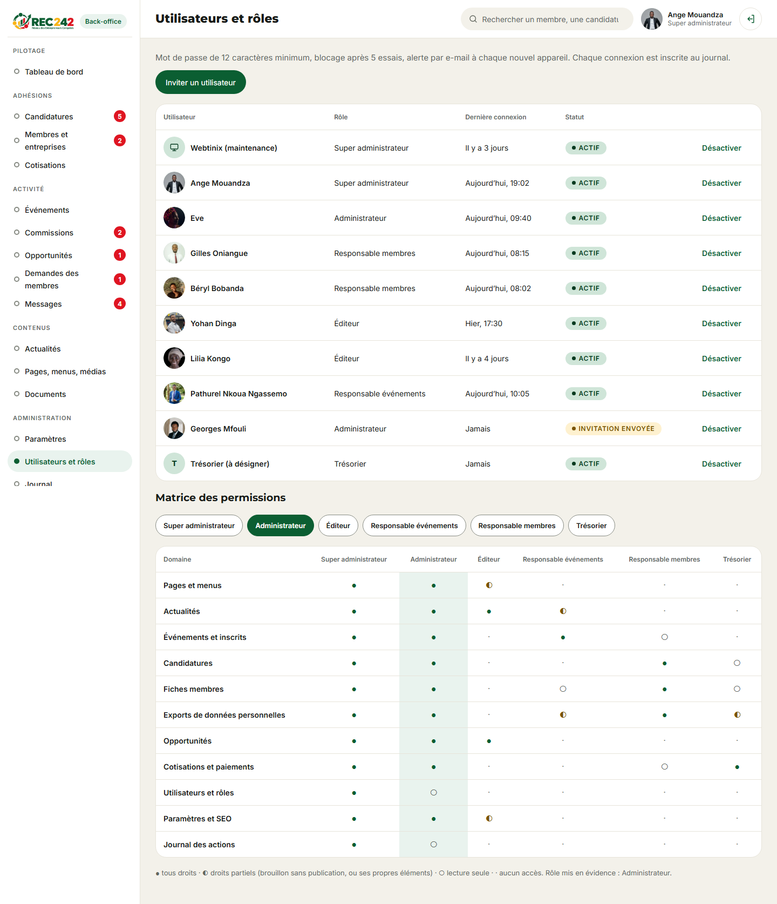
Quand une personne quitte l'équipe : sur sa ligne, cliquez sur Désactiver et confirmez. Elle ne peut plus se connecter. Son nom reste dans le journal.
Sous le tableau, la matrice montre, pour chaque domaine, ce que chaque rôle peut faire : tous droits, droits partiels, lecture seule ou aucun accès. Elle est en lecture : elle reflète les règles en place et ne se modifie pas à la main.
Après 5 essais ratés, un compte se bloque tout seul 15 minutes. Le super administrateur peut le débloquer plus tôt depuis la fiche de l'utilisateur.
Voir la section « Administrateur » : le journal fonctionne de la même façon. Vous seul et l'administrateur y avez accès ; l'administrateur y est en lecture seule.
Toutes vos actions sur les comptes sont inscrites au journal. Une personne désactivée n'est jamais supprimée : si elle revient, on la réactive en changeant son statut.
Le rôle qui fait vivre le site au quotidien : il publie, règle les paramètres, suit la discipline et surveille le journal.
| Domaine | Droit | Précision |
|---|---|---|
| Pages et menus | Tous droits | Publie les pages préparées par l'éditeur. |
| Actualités | Tous droits | |
| Événements et inscrits | Tous droits | |
| Candidatures, fiches membres | Tous droits | |
| Exports de données personnelles | Tous droits | |
| Opportunités | Tous droits | |
| Cotisations et paiements | Tous droits | |
| Paramètres et référencement | Tous droits | Seul avec le super administrateur à modifier les Tarifs. |
| Commissions, gouvernance et experts, demandes des membres, documents, annuaire imprimé, FAQ, partenaires, médias | Tous droits | |
| Discipline | Tous droits | Ouvre et conduit les procédures. |
| Messages des formulaires | Tous droits | Reçoit les messages « Partenariat » et « Autre ». |
| Utilisateurs et rôles | Lecture seule | Voit la liste et la matrice, ne modifie rien. |
| Journal des actions | Lecture seule | Consulte et exporte. |
Les pages se construisent avec des blocs (texte, image, chiffres clés, cartes, questions, témoignages, logos, appel à l'action, antennes) que l'on déplace à la souris. Chaque enregistrement crée une version : vous pouvez en Restaurer une ancienne depuis l'historique.
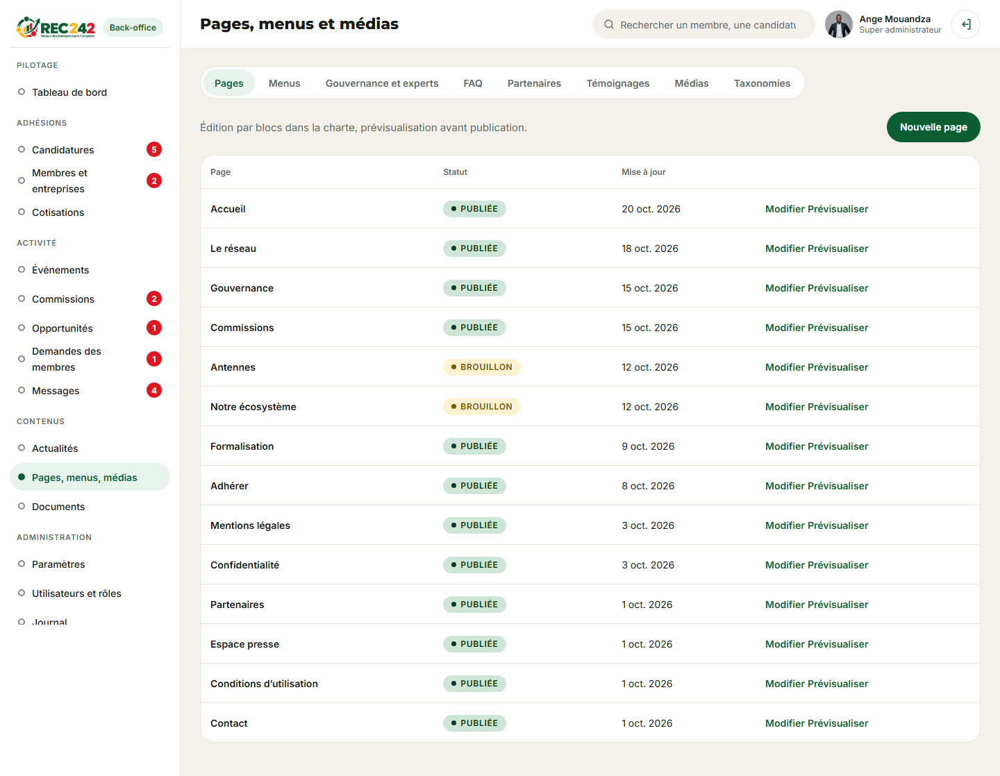
Si la date n'est pas dans le futur, le système refuse de programmer et vous le dit. Pour retirer une actualité du site sans la supprimer, choisissez le statut « Archivé ».
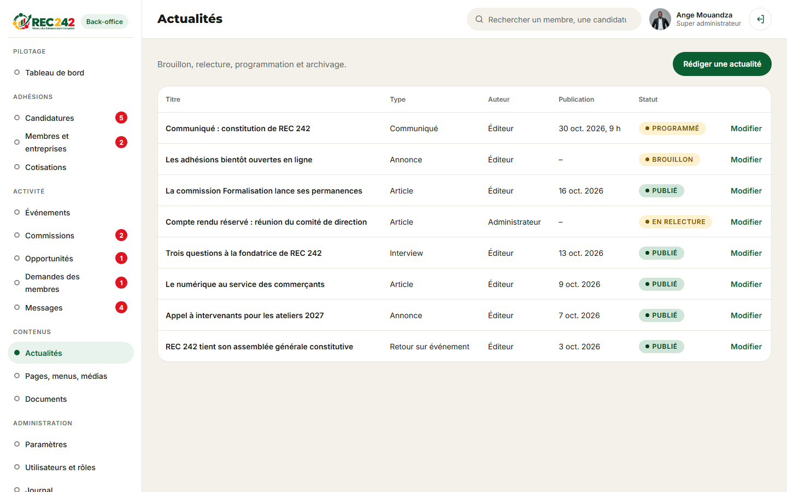
Dans , onglet « Menus » : glissez les entrées pour changer l'ordre. Sept entrées au maximum. L'éditeur ne peut pas toucher aux menus.
Ouvrez . Chaque onglet règle une partie du site :
| Onglet | À quoi il sert |
|---|---|
| Coordonnées | Adresse du siège, e-mail de contact, horaires, réseaux sociaux, plan d'accès. |
| Numéro WhatsApp, lien de la chaîne publique, lien du groupe des membres (réservé). Changer le lien du groupe est inscrit au journal. | |
| Chiffres clés | Quatre chiffres au plus affichés sur le site. Chacun est saisi à la main ou calculé (membres actifs, entreprises représentées, secteurs représentés). Un chiffre laissé vide n'est pas affiché. |
| Tarifs | Voir ci-dessous. |
| E-mails automatiques | Adresse qui reçoit l'alerte à chaque candidature (et sa copie), alertes pour les messages, textes des e-mails envoyés par le site, réponses types des messages. |
| Référencement | Titre et description du site pour les moteurs de recherche, image de partage par défaut. |
Cliquez sur Enregistrer en haut de l'écran après vos changements.
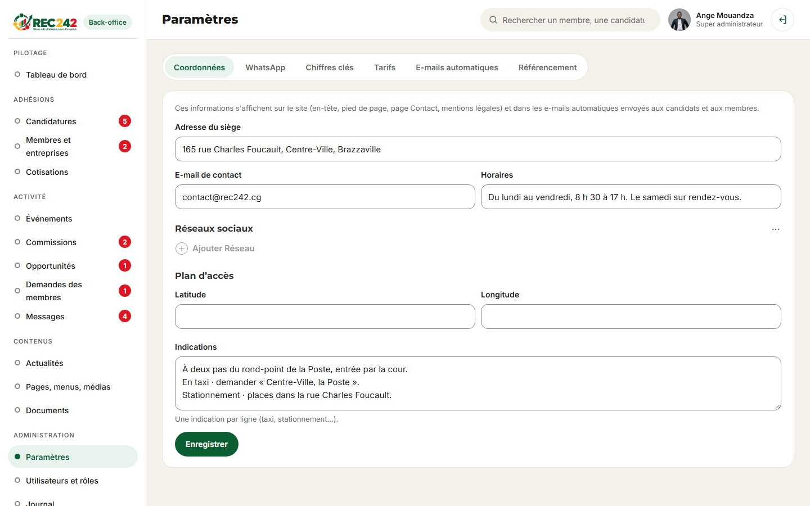
C'est ici, et seulement ici, que se règlent le droit d'adhésion et la cotisation de chaque catégorie, ainsi que les règles de paiement : délai pour solder la cotisation, nombre de tranches au plus, nombre de relances avant constat de perte, intervalle minimal entre relances. Un second bloc règle l'annuaire imprimé : édition en cours, date de clôture des fiches, tarifs des encarts.
Dans , vous voyez qui a quel rôle, la date de dernière connexion et le statut (actif, invitation envoyée, désactivé). Vous ne pouvez rien changer : pour inviter une personne, changer ses rôles ou désactiver son compte, demandez au super administrateur.
Une sanction ne se prononce qu'au bout d'une procédure en étapes, dans l'ordre. L'écran vous guide et bloque toute étape trop tôt, en vous disant pourquoi. Tout se fait depuis la fiche du membre (, Ouvrir), bloc « Discipline ».
Pour abandonner la procédure avant la décision, cliquez sur Classer sans suite. Une frise « Étapes » montre où en est le dossier, avec les dates calculées, et l'historique garde chaque courrier.
Le journal est en lecture seule : personne ne peut y changer ni y effacer une ligne.
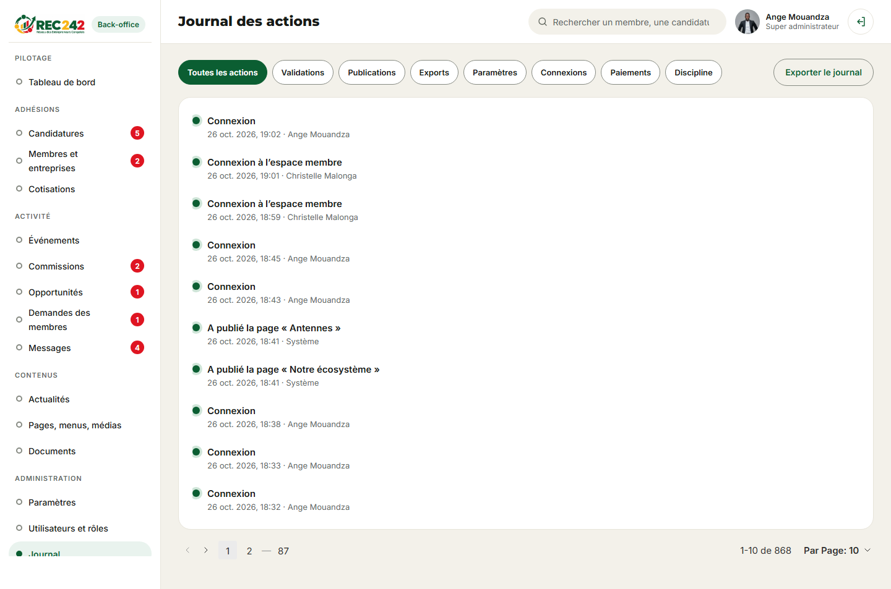
Le rôle qui accueille les candidats, tient les fiches des membres et répond à leurs demandes.
| Domaine | Droit | Précision |
|---|---|---|
| Candidatures | Tous droits | Traite, accepte, refuse, convertit. |
| Fiches membres | Tous droits | Statut, commissions, démission, lien d'activation. |
| Exports de données personnelles | Tous droits | |
| Commissions et demandes pour les rejoindre | Tous droits | |
| Demandes des membres (experts, mises en relation) | Tous droits | |
| Annuaire imprimé et encarts | Tous droits | |
| Messages des formulaires | Droits partiels | Les messages « Adhésion » qui lui sont transmis. |
| Événements et inscrits | Lecture seule | |
| Cotisations et paiements | Lecture seule | Voit, n'enregistre rien. |
| Documents | Lecture seule | |
| Discipline | Lecture seule | Les étapes sont faites par les administrateurs. |
| Gouvernance, experts et étiquettes | Lecture seule | |
| Pages, actualités, opportunités, paramètres, utilisateurs, journal | Aucun accès |
Ouvrez . Les pastilles en haut filtrent par statut, avec le nombre de dossiers : Toutes, Reçue, En examen, Complément demandé, Acceptée, Refusée. Cliquez sur Ouvrir sur la ligne du candidat.
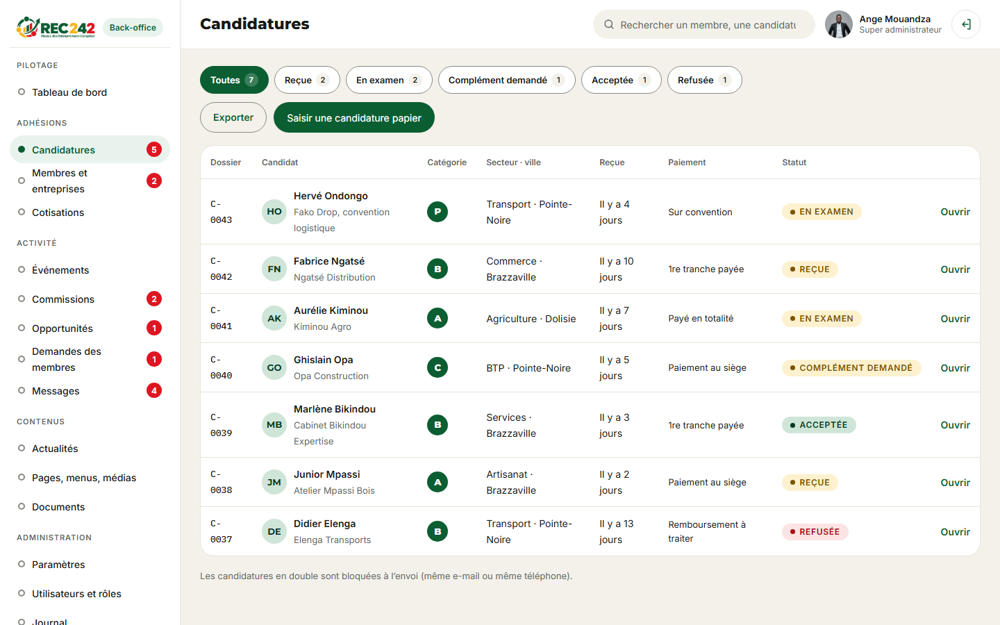
Le dossier suit ce parcours : Reçue, En examen, Complément demandé, Acceptée, puis Active quand le membre est créé. Les sorties sont Refusée et Archivée. Chaque changement est daté, attribué à une personne et inscrit au journal.
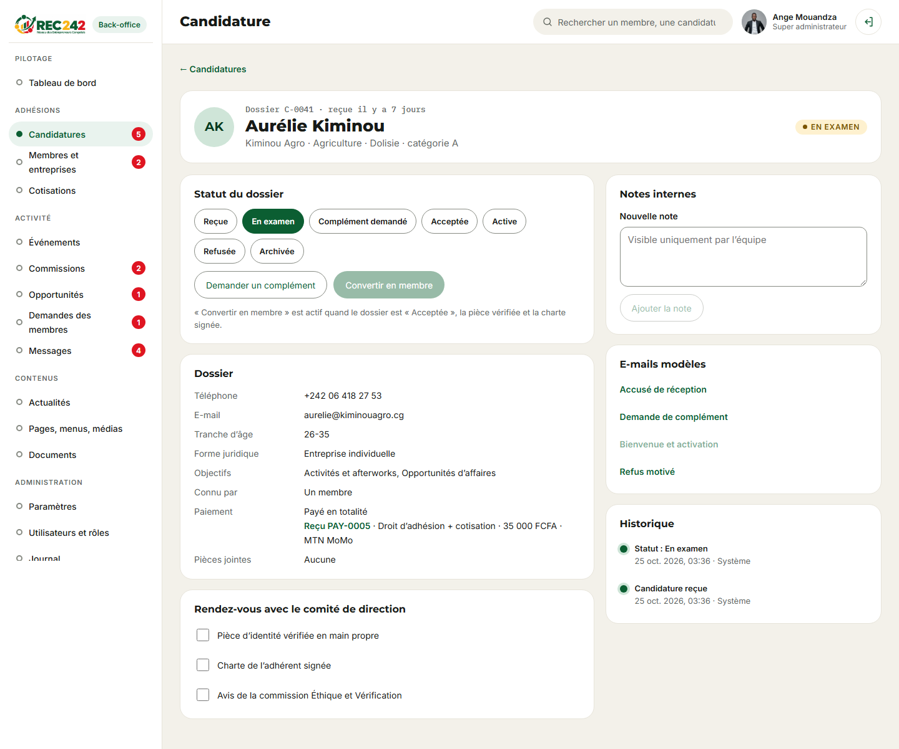
Le dossier passe à « Active ». Le lien d'activation est valable 72 heures. Le groupe WhatsApp des membres figure dans l'e-mail de bienvenue.
Si le candidat a déjà payé, la règle de remboursement n'est pas encore fixée par REC 242. En attendant, le paiement est marqué « remboursement à traiter » et le trésorier est prévenu.
Colonne de droite du dossier : « E-mails modèles » (Accusé de réception, Demande de complément, Bienvenue et activation, Refus motivé). Cliquez sur un modèle : il s'ouvre en brouillon que vous pouvez corriger avant de l'envoyer. « Bienvenue et activation » ne se débloque qu'après la conversion. Plus haut, « Notes internes » garde des remarques visibles de l'équipe seulement.
Sur la liste des candidatures, cliquez sur Saisir une candidature papier. Remplissez le formulaire : nom, téléphone ou WhatsApp, e-mail, activité, catégorie, ville, secteurs (3 au maximum), « Reçu lors de » (passage au siège ou un événement), bulletin signé en pièce jointe, et un éventuel paiement reçu sur place. Les mêmes contrôles que sur le site s'appliquent.
Les doublons sont bloqués : si l'e-mail ou le téléphone existe déjà (candidature ou membre), l'enregistrement est refusé avec un message. Ne cherchez pas à le contourner : ouvrez plutôt le dossier existant.
Certains champs d'une fiche (nom, raison sociale, secteurs, ville et quartier, téléphone, e-mail) sont verrouillés. Le membre ne peut que demander un changement, avec un justificatif.
Les nouvelles présentations d'entreprise écrites par les membres attendent aussi ici : Valider pour les publier sur la fiche, Refuser pour les écarter.
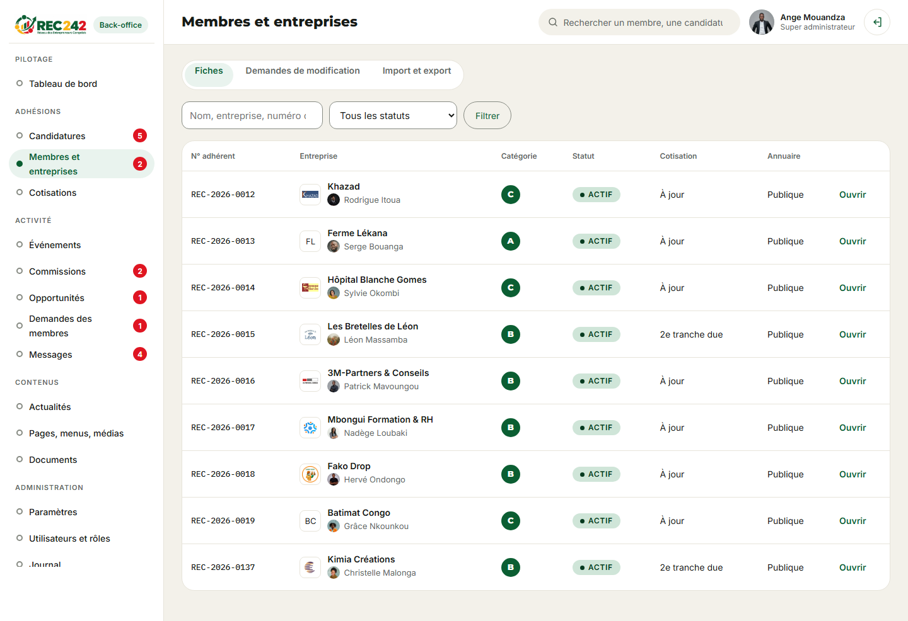
Onglet « Fiches » : cherchez par nom et filtrez par statut, puis cliquez sur Ouvrir.
Si un membre a envoyé plus de 10 demandes de mise en relation en une semaine, les mises en relation sont suspendues : après vérification, cliquez sur Rétablir les mises en relation.
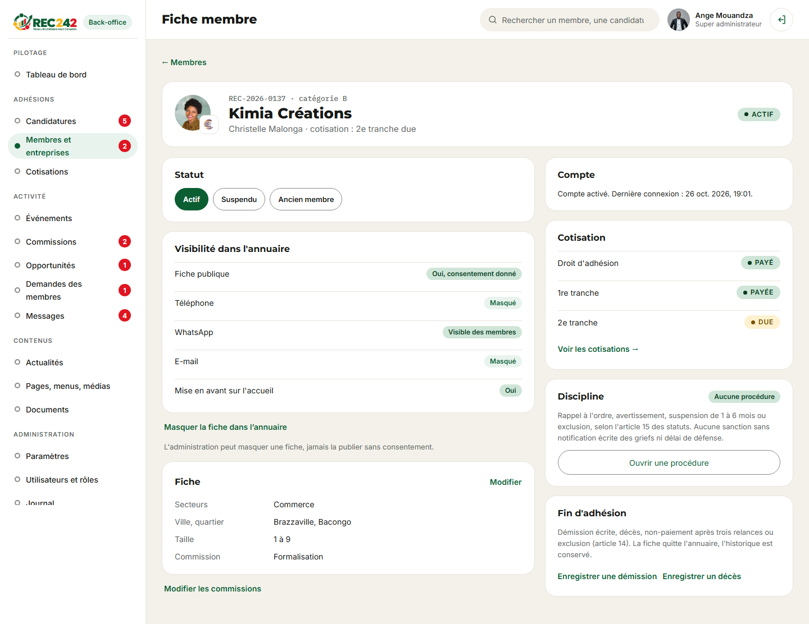
Pour WhatsApp, le bouton ouvre WhatsApp avec le texte prêt et garde la réponse dans la conversation. Pour passer le message à quelqu'un d'autre, cliquez sur Transmettre (une personne ou un rôle, avec un petit mot facultatif). Pour garder une remarque que l'expéditeur ne verra jamais, cliquez sur Ajouter une note interne. Un message traité peut être rouvert avec Rouvrir la conversation.
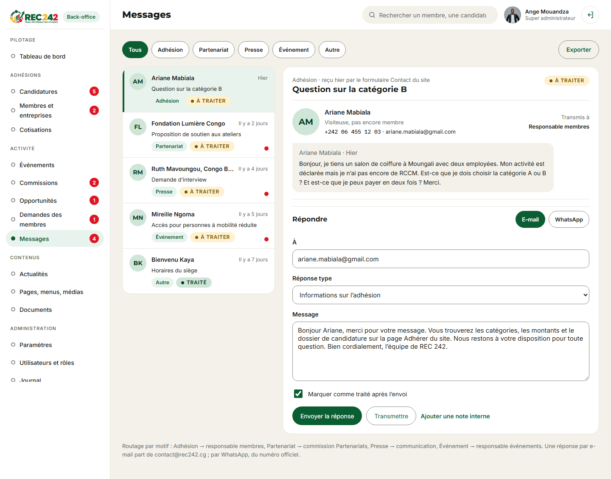
Ouvrez . Chaque commission a sa carte : ouverte ou sur désignation, responsable, nombre de membres, experts rattachés, prochaine réunion.
La commission Éthique et Vérification n'est pas ouverte aux candidatures : ses membres sont désignés par le comité de direction.
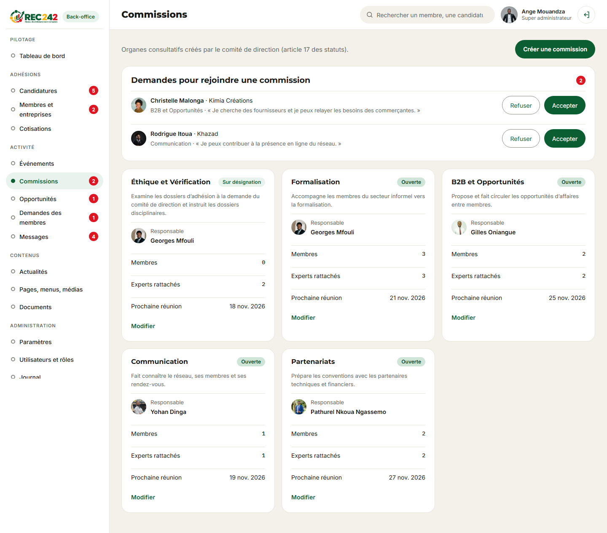
Ouvrez . Deux onglets :
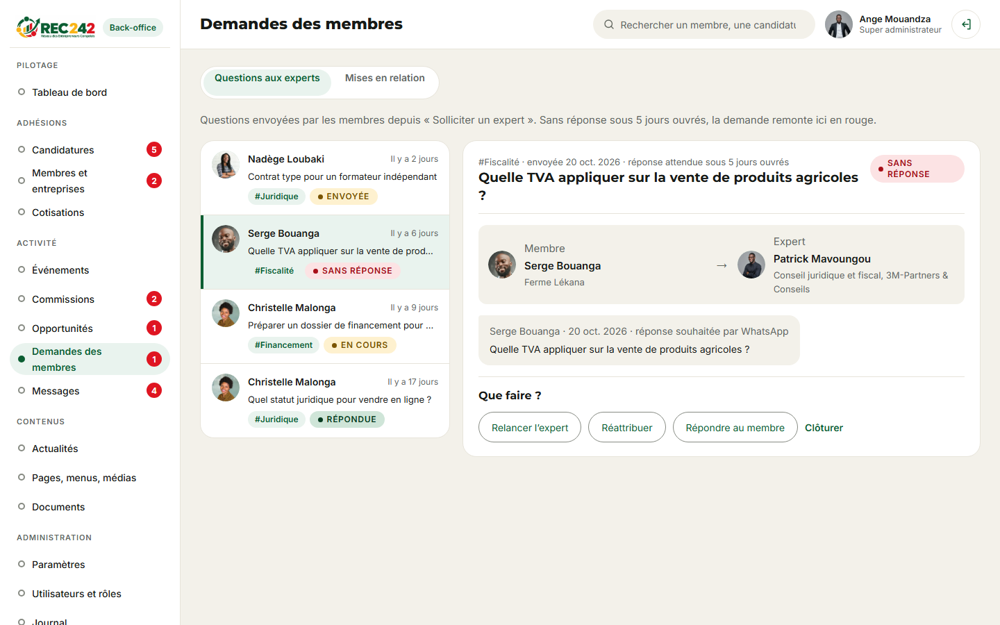
Dans , onglet « Import et export » : export des membres, import d'un fichier CSV (téléchargez d'abord le modèle, cliquez sur Vérifier le fichier pour voir les doublons et les erreurs avant d'importer) et bloc « Annuaire imprimé » : édition en cours, fiches incluses, encarts réservés, Réserver un encart, Exporter pour l'imprimeur. Le paiement d'un encart s'enregistre dans Cotisations, par le trésorier.
Le rôle qui tient les comptes de l'association : encaissements, suivi des cotisations, relances et reçus. Il est à désigner par REC 242.
| Domaine | Droit | Précision |
|---|---|---|
| Cotisations et paiements | Tous droits | Enregistre les paiements, envoie les relances, constate la perte. |
| Exports de données personnelles | Droits partiels | Seulement l'export comptable des paiements. |
| Candidatures | Lecture seule | |
| Fiches membres | Lecture seule | |
| Annuaire imprimé et encarts | Lecture seule | Le paiement des encarts s'enregistre par vous. |
| Pages, actualités, événements, opportunités, paramètres, utilisateurs, journal | Aucun accès |
Ouvrez . En haut, quatre compteurs : Membres à jour, Échéance à venir, En relance et FCFA encaissés sur l'exercice. Les pastilles filtrent le tableau : Toutes, À jour, À venir, En relance.
Le tableau montre, pour chaque membre : la catégorie, l'échéance, la date limite, les relances déjà faites (de 0 à 3 sur 3) et le statut. En dessous, « Paiements reçus » liste chaque paiement avec son mode et un lien vers le reçu.
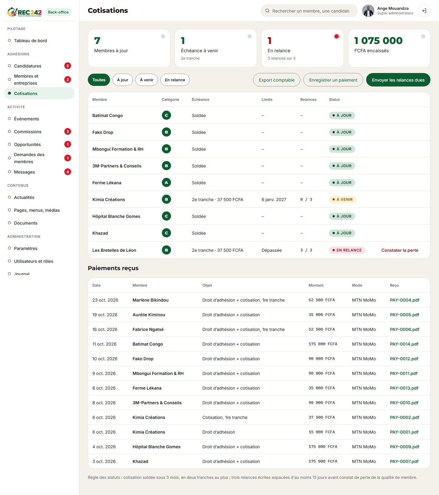
L'exercice court de la date d'adhésion à la veille de la date anniversaire. La cotisation se solde dans les 3 mois qui suivent le début de l'exercice, en une fois ou en deux tranches au plus. Les montants et ces délais sont dans , onglet .
Quand un membre ou un candidat paie au siège.
Le reçu officiel numéroté est créé et envoyé par e-mail au membre. Il apparaît dans « Paiements reçus », avec son lien. Le bouton reste éteint tant que le membre, le montant, la date ou la référence manquent.
Quand une cotisation n'est pas payée à l'échéance, trois relances écrites peuvent être envoyées, espacées d'au moins 15 jours. Elles ne partent jamais toutes seules : c'est vous qui les déclenchez.
Si aucune relance n'est due, l'écran vous l'indique : rien n'est envoyé.
Après la troisième relance, le membre passe à « 3 relances sur 3 » et le bouton Constater la perte apparaît sur sa ligne. Le constat est une décision du comité de direction, inscrite au procès-verbal. Ce n'est pas une sanction.
Le membre est informé par écrit, passe « ancien membre » et sa fiche quitte l'annuaire. Il peut réadhérer après régularisation, avec un nouvel agrément.
Le rôle qui écrit : actualités, opportunités, documents et contenus du site.
| Domaine | Droit | Précision |
|---|---|---|
| Actualités | Tous droits | Rédige, programme et publie. |
| Opportunités | Tous droits | Publie et modère. |
| Documents, FAQ, partenaires, médias, listes de choix | Tous droits | |
| Pages | Droits partiels | Prépare et corrige en brouillon. Ne publie pas. Ne touche pas aux menus. |
| Paramètres et référencement | Droits partiels | Seulement les champs de référencement des contenus qu'il édite. |
| Messages des formulaires | Droits partiels | Les messages « Presse » qui lui sont transmis. |
| Commissions, gouvernance et experts | Lecture seule | |
| Événements, candidatures, fiches membres, cotisations, discipline, utilisateurs, journal | Aucun accès |
L'enregistrement est automatique : en haut, vous lisez « Enregistré automatiquement » et le numéro de version. Pour revenir à un état précédent, ouvrez l'historique des versions et cliquez sur Restaurer.
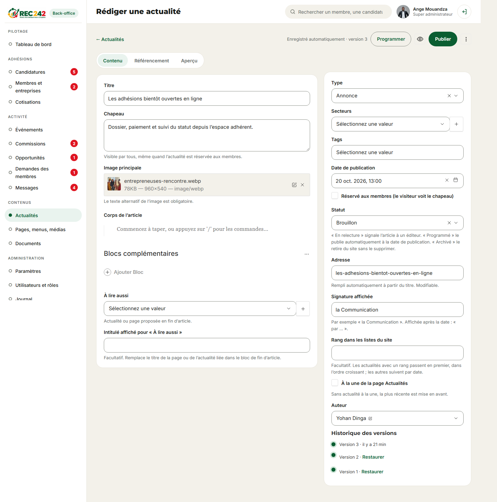
| Statut | Effet |
|---|---|
| Brouillon | Visible de l'équipe seulement. |
| En relecture | Signale l'article à un autre éditeur pour relecture. Rien n'est publié. |
| Programmé | Paraît automatiquement à la date de publication. |
| Publié | En ligne sur le site. |
| Archivé | Retiré du site, sans être supprimé. |
Dans le panneau de droite, cochez « Réservé aux membres (le visiteur voit le chapeau) ».
Comme le chapeau est visible de tous, n'y mettez rien de réservé. Décochez la case pour rendre l'article public.
Une annonce de membre arrive « À modérer ». Sélectionnez-la dans la liste : le panneau « À modérer » montre l'auteur, le texte et trois vérifications : date limite valide, pas de coordonnées dans le texte, conformité à la charte (celle-ci est à confirmer par vous).
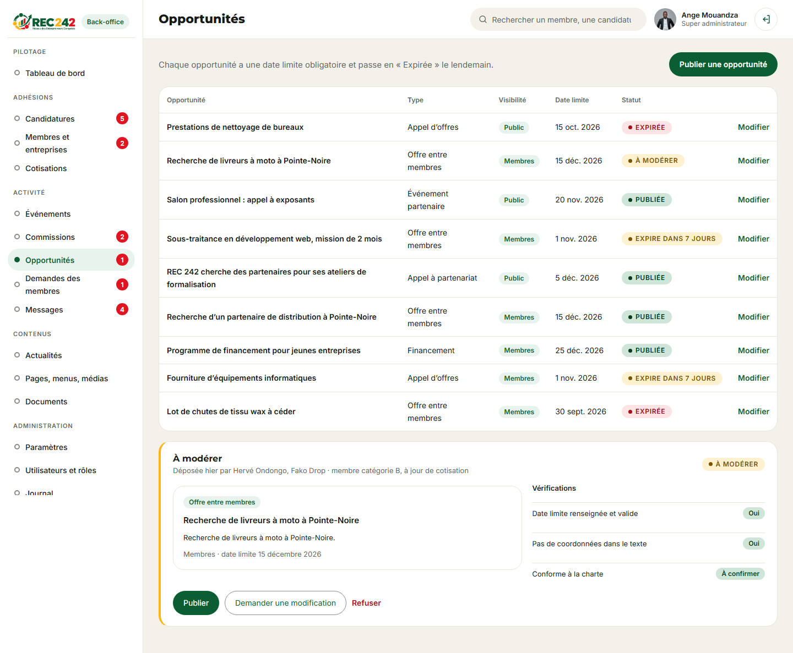
Dans , ouvrez la page, modifiez les blocs, enregistrez. La page reste en brouillon : prévenez un administrateur pour qu'il la publie.
Le rôle qui organise les rencontres de REC 242 : inscriptions, liste d'attente, présence le jour J.
| Domaine | Droit | Précision |
|---|---|---|
| Événements et inscrits | Tous droits | Crée, modifie, gère les inscrits, pointe. |
| Actualités | Droits partiels | Rédige les « Retours sur événement » en brouillon seulement. |
| Exports de données personnelles | Droits partiels | Seulement la liste des inscrits de ses événements. |
| Messages des formulaires | Droits partiels | Les messages « Événement » qui lui sont transmis. |
| Fiches membres | Lecture seule | |
| Pages, candidatures, opportunités, cotisations, paramètres, utilisateurs, journal | Aucun accès |
Les statuts possibles : Brouillon, Publié, Complet, Annulé, Reporté, Terminé.
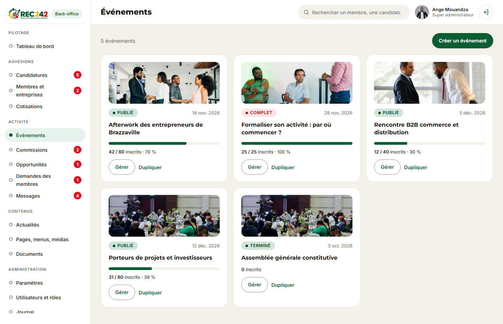
Dans l'onglet Inscriptions de la fiche :
Quand quelqu'un se désiste, la première personne de la liste d'attente prend la place automatiquement et reçoit un e-mail. Vous pouvez aussi le faire à la main :
Dans Gérer, onglet : le compteur donne le nombre de présents pointés. Le tableau liste les participants. Cliquez sur Exporter CSV pour récupérer la liste des inscrits de l'événement.
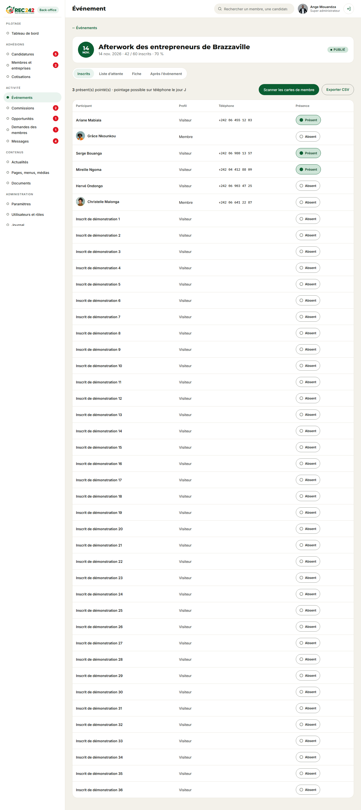
Avec la liste : dans l'onglet « Inscrits », cliquez sur le bouton de la colonne « Présence » : il passe de « Absent » à « Présent ».
Avec le scan (conseillé, depuis le téléphone) :
La salle n'a pas toujours de réseau, ce n'est pas un problème.
Les pointages en attente sont gardés sur ce téléphone et dans ce navigateur. Utilisez le même téléphone pour tout l'événement et ne videz pas les données du navigateur avant la synchronisation. Avant de partir, vérifiez que le compteur d'attente est à 0.
Onglet , bloc « Annuler ou reporter ». Choisissez Annuler l'événement ou Reporter. Pour un report, indiquez la « Nouvelle date ». Écrivez le « Message aux inscrits », puis cliquez sur Annuler et prévenir les inscrits ou Reporter et prévenir les inscrits. Les inscrits et la liste d'attente sont prévenus automatiquement.
Onglet : vous voyez le nombre de présents sur les inscrits. Le bouton « Compte rendu, galerie et documents » mène au formulaire pour les renseigner. Le nombre de participants affiché sur le site n'apparaît que s'il est rempli. Cliquez sur Créer l'actualité : un brouillon « Retour sur … » est créé, à compléter. Vous ne pouvez pas le publier : un éditeur ou un administrateur le fait.
Sur la carte de l'événement, Dupliquer crée une copie en brouillon, sans les inscrits. Pratique pour un rendez-vous qui revient.
Un message d'erreur, un écran qui ne répond pas, un accès qui manque : voici quoi faire.
| Ce que vous voyez | Ce qu'il faut faire |
|---|---|
| Je ne peux plus me connecter | Après 5 essais ratés, le compte est bloqué 15 minutes. Attendez, puis réessayez. Sinon, utilisez « Mot de passe oublié ? ». |
| Je suis déconnecté d'un coup | La déconnexion est automatique après 30 minutes sans action. Reconnectez-vous. |
| Un écran du menu manque, ou un bouton est grisé | Votre rôle ne permet pas cette action. Relisez la page de votre rôle. Si vous pensez qu'il manque un droit, parlez-en au super administrateur. |
| Un bouton ne s'allume pas (par exemple « Convertir en membre ») | Il manque une condition. Le texte juste sous le bouton, ou en bas de l'écran, la donne. |
| Un message rouge s'affiche après un clic | Lisez-le : il dit en général ce qui manque (un motif, une date, une référence). Corrigez et recommencez. |
| Une candidature est refusée comme doublon | L'e-mail ou le téléphone existe déjà. Cherchez la fiche existante avec la barre de recherche. |
| Je n'ai pas reçu l'e-mail d'invitation ou d'activation | Regardez les courriers indésirables. Le lien dure 72 heures : au-delà, demandez un nouvel envoi (super administrateur pour un utilisateur, responsable membres pour un membre). |
| Une action a été faite par erreur | Ne refaites rien dans la précipitation. Notez ce qui s'est passé et prévenez un administrateur : le journal des actions permet de retrouver ce qui a été fait. |
Si vous pensez que votre compte a été utilisé par quelqu'un d'autre (une alerte de nouvelle connexion que vous ne reconnaissez pas, par exemple), changez votre mot de passe tout de suite et prévenez le super administrateur.
Pour un problème de fonctionnement du site ou du back-office, écrivez à Webtinix, maître d'œuvre de la plateforme et chargé de la maintenance.
| Contact | Coordonnées |
|---|---|
| Webtinix, maître d'œuvre | contact@webtinix.com |
Dans votre message, indiquez :
N'écrivez jamais votre mot de passe dans un message.
Pour toute question sur une décision de REC 242 (accepter un membre, fixer un tarif, valider un courrier de discipline), adressez-vous au comité de direction. Webtinix s'occupe du fonctionnement, pas des décisions de l'association.